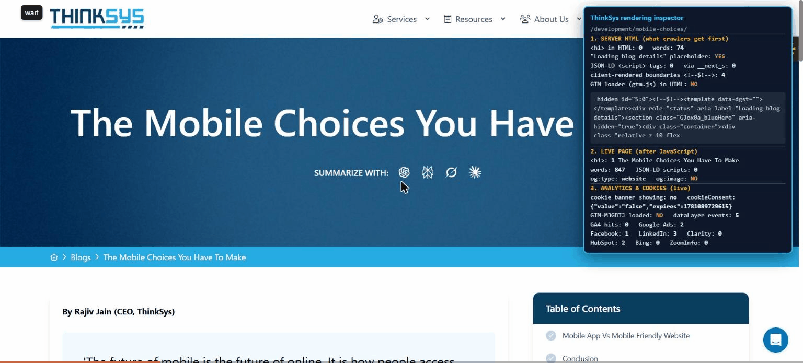
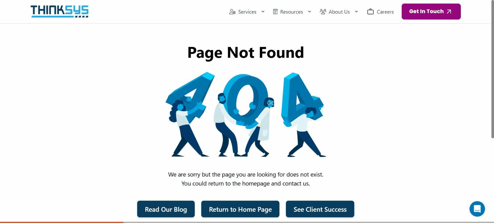
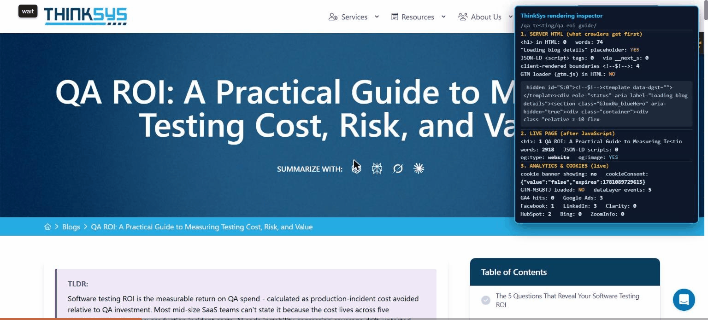
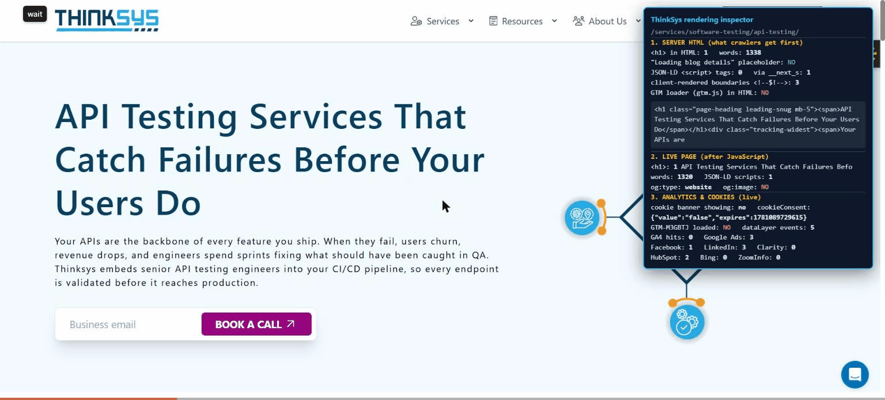
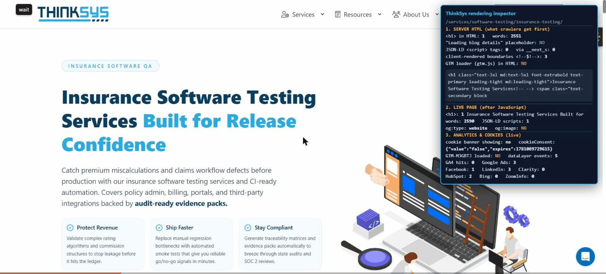
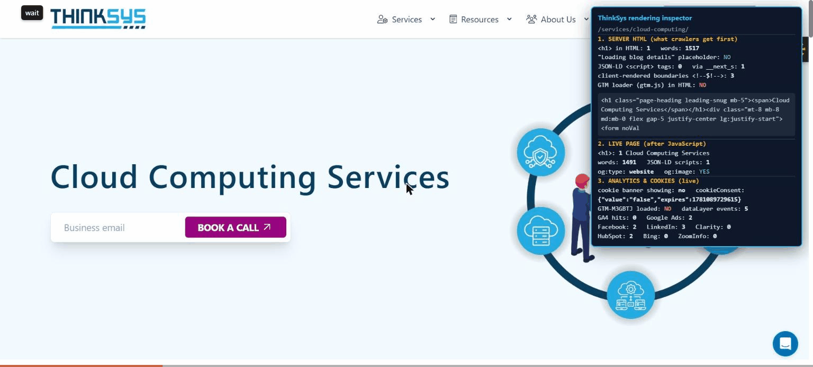

Pick a page type. Every card is a short live demo you can do on screen in Chrome, with no tools to install: open the page, follow the steps, point at the result, and read out the one-line ask. Developers open Technical detail on each card for the evidence, the fix with code and a screen recording.
Every page exists in two versions. Developers fix the second one.
After the browser runs the site's JavaScript.
The raw page from the server. You can see it with Ctrl+U.
Each card has a Technical detail for developers section with evidence, the fix with code, and a "done when" test. Ticks you make here are saved only in your own browser. Site: Next.js 16.4.3 frontend with Strapi CMS.
<!--$!--> with an empty data-dgst) and sends the fallback: a "Loading blog details" skeleton. The H1 and paragraphs exist only as JSON inside self.__next_f.push(...) and are built in the browser. Affects all 457 live posts in blog and old_post./development/mobile-choices/:
<div hidden id="S:0"><!--$!--><template data-dgst=""></template>
<div role="status" aria-label="Loading blog details">
<section class="GJox0a_blueHero" aria-hidden="true"> ...skeleton bars...
The H1 only exists inside the RSC payload: ["$","h1",null,{...,"children":["$","span",null,{"children":"The Mobile Choices You Have To Make"}]}]curl -s https://thinksys.com/development/mobile-choices/ | grep -c "<h1" # 0 curl -s https://thinksys.com/development/mobile-choices/ | grep -c "Loading blog details" # 2Locally:
next build && next start, request a post and watch the terminal; production hides the SSR error, the server log shows it.window/document/localStorage in render, or the Strapi fetch failing at render time), or the article is loaded with dynamic(..., { ssr: false }), or a client component calls useSearchParams() without its own Suspense boundary."use client" on the body component, dynamic(..., { ssr: false }), useSearchParams() and browser-only APIs used during render.// app/[category]/[slug]/page.tsx (no "use client")
import { notFound } from "next/navigation";
import { getPost } from "@/lib/strapi";
import ShareButtons from "./ShareButtons"; // small client component
import TableOfContents from "./TableOfContents"; // small client component
export const revalidate = 3600;
export default async function PostPage({ params }: { params: Promise<{ category: string; slug: string }> }) {
const { category, slug } = await params;
const post = await getPost(category, slug);
if (!post) notFound();
return (
<article>
<h1>{post.title}</h1>
<TableOfContents headings={post.headings} />
<div dangerouslySetInnerHTML={{ __html: post.html }} />
<ShareButtons url={post.url} />
</article>
);
}useEffect inside the small client components; wrap any component using useSearchParams() in its own <Suspense>.<h1> and body text, and no <!--$!--> wraps the article.
<noscript>; posts have a fourth (the article, see the first card). They're likely the site-wide client components: analytics loader, HubSpot loader, cookie banner.<!--$!--><template data-dgst=""></template><!--/$--> <!--$!--><template data-dgst=""></template><!--/$--> <!--$!--><template data-dgst=""></template><!--/$--> <noscript><iframe src="https://www.googletagmanager.com/ns.html?id=GTM-M3GBTJ" ...
<noscript> in the root layout; remove one at a time and re-check curl -s / | grep -c '<!--\$!-->'.// components/ClientOnly.tsx
"use client";
import { useEffect, useState } from "react";
export default function ClientOnly({ children }: { children: React.ReactNode }) {
const [ready, setReady] = useState(false);
useEffect(() => setReady(true), []);
return ready ? <>{children}</> : null;
}
// app/layout.tsx
<ClientOnly><CookieBanner /></ClientOnly>localStorage at the top of the component), move that read into useEffect.curl -s <url> | grep -c '<!--\$!-->' returns 0 on service pages.services/software-testing/cypress-automation) is published in Strapi, but the URL returns HTTP 404 and is still in the sitemap. Other entries in the same collection with the same slug pattern work (e.g. insurance-testing, #18).dynamicParams = false, or no revalidation webhook), or the route's Strapi query filters on a field this entry doesn't have. Compare entry #7 with #18.// the route that serves page-collection entries export const dynamicParams = true; export const revalidate = 3600;
// app/api/revalidate/route.ts
import { revalidatePath } from "next/cache";
export async function POST(req: Request) {
if (req.headers.get("x-revalidate-secret") !== process.env.REVALIDATE_SECRET)
return new Response("Unauthorized", { status: 401 });
const { model, entry } = await req.json();
const path = "/" + String(entry?.slug ?? "").replace(/^\/|\/$/g, "") + "/";
revalidatePath(path);
revalidatePath("/sitemap.xml");
return Response.json({ revalidated: path, model });
}
In Strapi: Settings → Webhooks → Create, URL https://thinksys.com/api/revalidate, header x-revalidate-secret, events Entry publish / unpublish / update.
/healthcare-testing/.healthcare-testing, but the page lives at /services/software-testing/healthcare-testing/. The slug URL /healthcare-testing/ shows "Page Not Found" while returning HTTP 200 with noindex (a soft 404).services/microservices-testing, which returns 404; the page works at /services/software-testing/microservices-testing/.curl -s -o /dev/null -w "%{http_code}\n" https://thinksys.com/healthcare-testing/ # 200
curl -s -o /dev/null -w "%{http_code}\n" https://thinksys.com/services/microservices-testing/ # 404next.config:
async redirects() {
return [
{ source: "/healthcare-testing", destination: "/services/software-testing/healthcare-testing/", permanent: true },
{ source: "/services/microservices-testing", destination: "/services/software-testing/microservices-testing/", permanent: true },
];
}notFound() from the page instead of rendering the not-found component manually.
const page = await getPageByPath(path); if (!page) notFound(); // status 404, not 200
next/script strategy="beforeInteractive", but that component sits inside the client-rendered part from the first card. A beforeInteractive script that only mounts after hydration is never inserted, so there's no JSON-LD in the HTML or in the browser. 307 posts have seo.structuredData filled in Strapi; none output it./development/mobile-choices/:
["$","$L30",null,{"id":"structured-data-script","strategy":"beforeInteractive",
"type":"application/ld+json","dangerouslySetInnerHTML":{"__html":"$31"}}]
After full load in Chrome: document.querySelectorAll('script[type="application/ld+json"]').length === 0. Google Rich Results Test on /qa-testing/qa-roi-guide/: "No items detected"."use client", no next/script):
// components/JsonLd.tsx
export default function JsonLd({ data }: { data: unknown }) {
if (!data) return null;
const json = typeof data === "string" ? data : JSON.stringify(data);
return <script type="application/ld+json"
dangerouslySetInnerHTML={{ __html: json.replace(/</g, "\\u003c") }} />;
}const jsonLd = post.seo?.structuredData ?? {
"@context": "https://schema.org", "@type": "BlogPosting",
headline: post.title, image: post.featuredImage?.url,
datePublished: post.publishedAt, dateModified: post.updatedAt,
author: { "@type": "Person", name: post.author?.name ?? "ThinkSys" },
publisher: { "@type": "Organization", name: "ThinkSys" },
mainEntityOfPage: canonicalUrl,
};
return (<><JsonLd data={jsonLd} /><article>...</article></>);<Script id="structured-data-script" strategy="beforeInteractive" ...> from the blog template.curl -s <post> | grep -c 'type="application/ld+json"' ≥ 1, and Google's Rich Results Test detects BlogPosting.
self.__next_s (next/script); page-collection pages don't even do that on 15 of 17 pages: the schema is built only in the browser. Google sees it after rendering; crawlers that don't run JavaScript don't.type="application/ld+json". After load: 1 JSON-LD script. Google Rich Results Test on /services/software-testing/api-testing/: 3 valid items (Breadcrumbs, Local business, Organization).JsonLd server component as the blog fix in the service, QA service and page-collection templates, passing entry.seo.structuredData.next/script JSON-LD (the __next_s push) and, in the page-collection template, the client component that builds schema in the browser.const jsonLd = entry.seo?.structuredData ?? {
"@context": "https://schema.org",
"@graph": [
{ "@type": "Service", name: entry.title, url: canonicalUrl,
provider: { "@type": "Organization", name: "ThinkSys" }, areaServed: "US" },
{ "@type": "BreadcrumbList", itemListElement: breadcrumbs.map((b, i) =>
({ "@type": "ListItem", position: i + 1, name: b.name, item: b.url })) },
],
};<script type="application/ld+json"> tag.

og:type is website on every post; no article:published_time, article:modified_time, article:author or <meta name="author">, even where Strapi has an author linked.generateMetadata:
export async function generateMetadata({ params }): Promise<Metadata> {
const { category, slug } = await params;
const post = await getPost(category, slug);
return {
title: post.seo.metaTitle,
description: post.seo.metaDescription,
authors: post.author ? [{ name: post.author.name, url: post.author.url }] : undefined,
openGraph: {
type: "article",
publishedTime: post.publishedAt,
modifiedTime: post.updatedAt,
authors: post.author?.url ? [post.author.url] : undefined,
},
};
}
For old_post use its date / dateModify fields.og:type="article" and both article times.seo.metaImage is empty there's no og:image: service 2, QA service 19 of 19, page collection 13 of 17, blog 13, old post 352. New blog posts already fall back to the featured image; other templates don't. When seo.canonicalURL is empty there's no canonical tag (service 1, blog 7, old post 4).generateMetadata:
// lib/seo.ts
const SITE = "https://thinksys.com";
const DEFAULT_IMAGE = SITE + "/og-default.png"; // 1200x630, add to /public
export function buildMeta(entry, path: string): Metadata {
const seo = entry.seo ?? {};
const canonical = normalizeCanonical(seo.canonicalURL) ?? SITE + path;
const image = seo.metaImage?.url ?? entry.featuredImage?.url ?? entry.heroImage?.url ?? DEFAULT_IMAGE;
return {
metadataBase: new URL(SITE),
title: seo.metaTitle,
description: seo.metaDescription,
alternates: { canonical },
openGraph: { url: canonical, images: [{ url: image, width: 1200, height: 630 }] },
twitter: { card: "summary_large_image", images: [image] },
};
}og:image." https://thinksys.com /qa-testing/playwright-vs-selenium-vs-cypress/". Affects blog entries #49, #48, #41 and #58.export function normalizeCanonical(raw?: string | null): string | null {
if (!raw) return null;
let u = raw.replace(/\s+/g, "");
if (u.startsWith("/")) u = "https://thinksys.com" + u;
try {
const url = new URL(u);
url.protocol = "https:";
url.hostname = url.hostname.replace(/^www\./, "");
url.search = ""; url.hash = "";
if (!url.pathname.endsWith("/")) url.pathname += "/";
return url.toString();
} catch { return null; } // invalid -> fall back to the page's own URL
}
Optionally apply the same cleanup in a Strapi beforeCreate/beforeUpdate lifecycle hook.%title% %sep% %sitename%, %currentyear%). The frontend fills them, but outputs "How to Build a SaaS Application? - Thinksys Inc." with doubled spaces and the old brand name.export function fillTemplate(text: string, ctx: { title: string }): string {
return text
.replace(/%title%/gi, ctx.title)
.replace(/%sitename%/gi, "ThinkSys")
.replace(/%sep%/gi, "|")
.replace(/%currentyear%/gi, String(new Date().getUTCFullYear()))
.replace(/%[a-z_]+%/gi, "")
.replace(/\s*\|\s*(\|\s*)+/g, " | ")
.replace(/\s{2,}/g, " ")
.trim();
}
Also replace any hard-coded "Thinksys Inc." suffix with "ThinkSys".scroll, mousemove or touchstart with no fallback, so visitors who don't interact aren't tracked by any GTM tag (GA4 G-6PT2G4WMZC, Ads AW-17043520935/AW-11221760516, LinkedIn, Bing, Clarity, ZoomInfo, Apollo)./_next/static/chunks/1tl7s5icm9nlj.js (formatted, re-checked 18 Nov):
useEffect(() => {
let done = false;
const load = () => { if (done) return; done = true;
window.dataLayer = window.dataLayer || [];
window.dataLayer.push({ "gtm.start": Date.now(), event: "gtm.js" });
const s = document.createElement("script"); s.async = true;
s.src = "https://www.googletagmanager.com/gtm.js?id=GTM-M3GBTJ";
document.head.appendChild(s); };
window.addEventListener("scroll", load, { once: true });
window.addEventListener("mousemove", load, { once: true });
window.addEventListener("touchstart", load, { once: true });
}, []);// app/layout.tsx
import { GoogleTagManager } from "@next/third-parties/google";
export default function RootLayout({ children }) {
return (
<html lang="en">
<GoogleTagManager gtmId="GTM-M3GBTJ" />
<body>{children}</body>
</html>
);
}
Then remove the scroll/mousemove loader component.const events = ["scroll", "mousemove", "touchstart", "keydown", "pointerdown"];
events.forEach(e => window.addEventListener(e, load, { once: true, passive: true }));
if ("requestIdleCallback" in window) requestIdleCallback(load, { timeout: 2500 });
else setTimeout(load, 2500);
document.addEventListener("visibilitychange", load, { once: true });
Either way, push the consent defaults from the cookie card before GTM loads.gtm.js?id=GTM-M3GBTJ loads within 5 s and GTM Preview shows "Container Loaded".
_ga, _gcl_au, _fbp, _clck, hubspotutk, _uetsid, _zitok).localStorage.cookieConsent = {"value":"false",...}; nothing reads it. All the same tags still fire and existing cookies stay.gtag('consent', ...) entries in dataLayer.js-na2.hsadspixel.net/pixels.js) loads the Facebook pixel and Google Ads by itself ~9 s after load, with no interaction and no consent check./qa-testing/qa-roi-guide/: GA4 1, Ads 8, Facebook 1, LinkedIn 3, Clarity 7, HubSpot 2. After Reject on /services/cloud-computing/: GA4 1, Ads 7, Facebook 3, LinkedIn 3, Clarity 7, HubSpot 2. On /healthcare-testing/: no gtm.js request, yet hsadspixel at 8.6 s, Facebook at 9.0 s, Google Ads at 9.1 s.// app/layout.tsx, inside <head>, before GoogleTagManager
<script dangerouslySetInnerHTML={{ __html: `
window.dataLayer = window.dataLayer || [];
function gtag(){dataLayer.push(arguments);}
var saved = null;
try { saved = JSON.parse(localStorage.getItem('cookieConsent') || 'null'); } catch (e) {}
var v = saved && saved.value === 'true' ? 'granted' : 'denied';
gtag('consent', 'default', { ad_storage: v, analytics_storage: v,
ad_user_data: v, ad_personalization: v, wait_for_update: 500 });
`}} />function saveConsent(granted: boolean) {
localStorage.setItem("cookieConsent",
JSON.stringify({ value: String(granted), expires: Date.now() + 180 * 864e5 }));
const v = granted ? "granted" : "denied";
window.gtag?.("consent", "update",
{ ad_storage: v, analytics_storage: v, ad_user_data: v, ad_personalization: v });
window.dataLayer?.push({ event: granted ? "consent_granted" : "consent_denied" });
if (!granted) {
(window as any)._hsp = (window as any)._hsp || [];
(window as any)._hsp.push(["revokeCookieConsent"]); // HubSpot
// also expire _ga, _ga_*, _gid, _gcl_au, _fbp, _clck, _clsk, _uetsid, _uetvid, _zitok
}
}consent_granted instead of All Pages.facebook.com/tr, px.ads.linkedin.com, clarity.ms, hs-analytics, zi-scripts; GA4 hits carry gcs=G100. After Accept, everything fires normally.cookieConsent: false): GA4, Ads, Facebook, LinkedIn, Clarity, HubSpot, Bing and ZoomInfo fire after one scroll./qa-testing/complete-bug-triage-meeting-process/ (blog #69, old_post #2646), /qa-testing/saas-performance-testing/ (blog #71, old_post #2708), /qa-testing/top-qa-interview-question-answer/ (blog #73, old_post #2984), /qa-testing/complete-guide-to-stlc/ (old_post #2768, #2797), /qa-testing/testing-blockchain/ (old_post #2779, #2810).async function getPostByPath(path: string) {
const [blog, old] = await Promise.all([findBlogByPath(path), findOldPostsByPath(path)]);
if (blog) return blog;
return old.sort((a, b) => +new Date(b.updatedAt) - +new Date(a.updatedAt))[0] ?? null;
}beforeCreate/beforeUpdate that queries blog + post for the same path and throws ApplicationError("Another entry already uses this URL")).403 ERROR – The request could not be satisfied (Request blocked) from CloudFront and stayed blocked for a while. Fine against abuse, but it must not catch search engines or SEO tools.awswaf:managed:aws:bot-control:bot:verified.